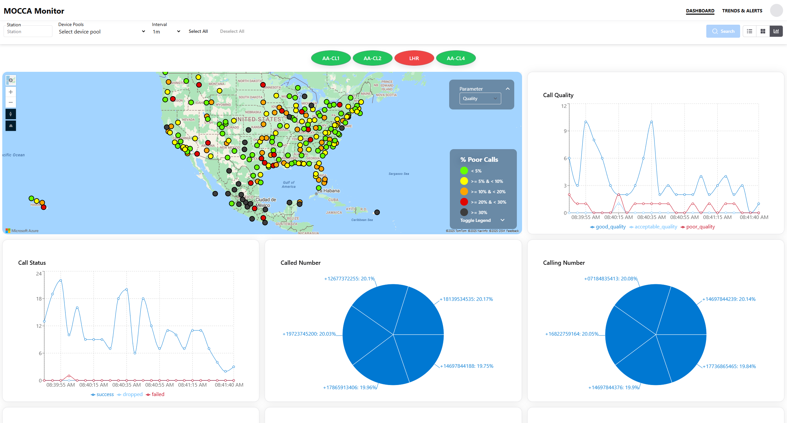
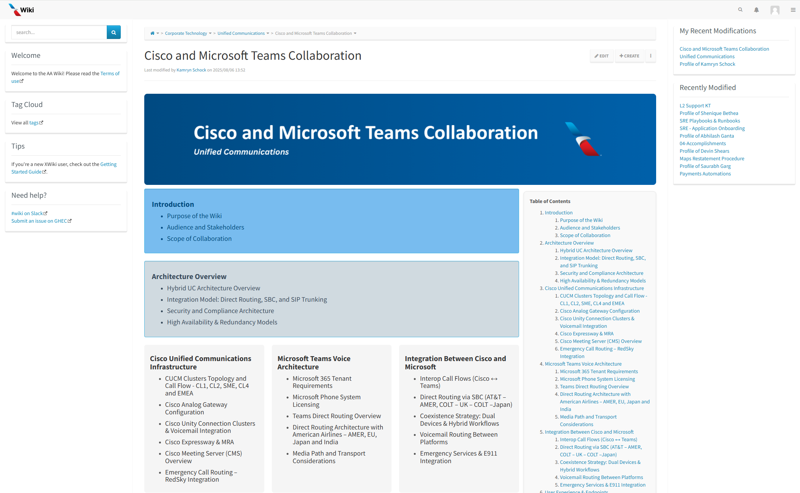
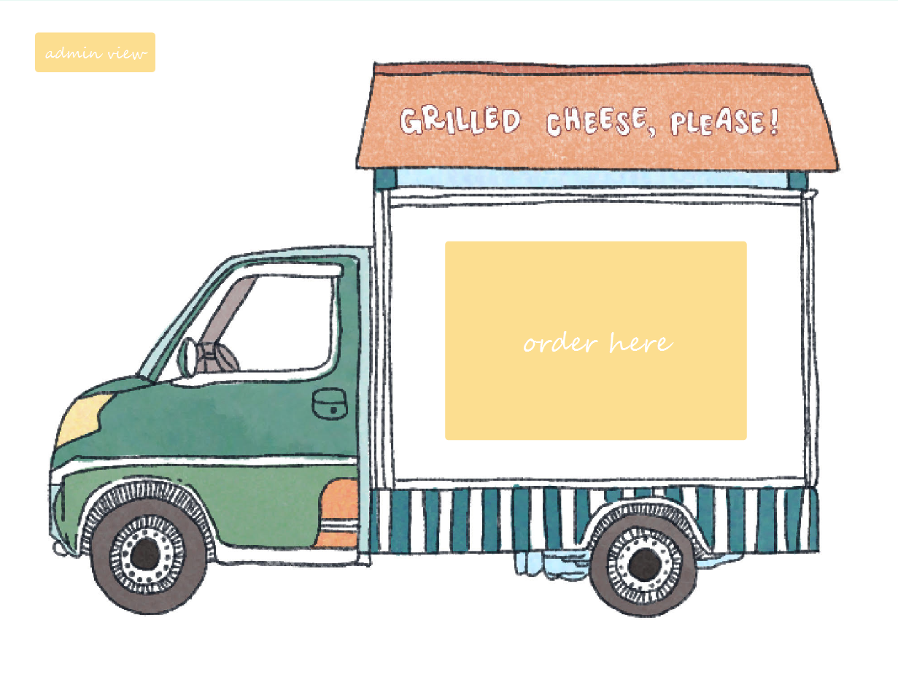
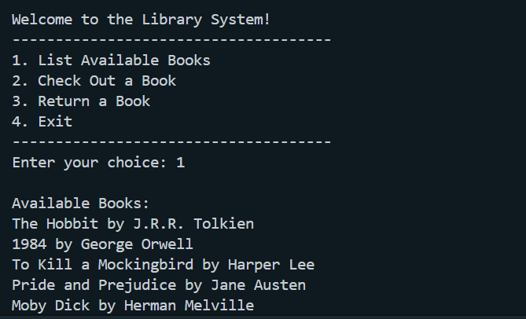

Learn more about my projects and experiences.

As a Software Developer Intern at American Airlines, my primary project was contributing to the software development process of a call monitoring tool that analyzed call record data throughout the airline operation. Using React, TypeScript, and Chakra UI elements, I contributed to the frontend and backend development of monitoring features. This enabled engineers to troubleshoot telephony issues at an optimized rate.

An additional component of my internship at American Airlines was creating a wiki page for the architecture of the Cisco and Microsoft Teams Collaboration system. With a heavy focus on documentation, this project utilized xWiki and HTML/CSS style components to build a webpage containing documentation for the system architecture.

As a part of CSCE 314 (Program Languages) coursework, the Grilled Cheese Food Truck Simulator project includes a user interface that allows users (customers) to interact with the food truck and select options from an order screen to submit transactions. This simulator includes a variety of functionalities, ensuring restocking capabilities, revenue tracking, and a smooth user experience.

This Haskell project implements a simple library management system where books are stored in a text file. Users can list available books, check out a book, and return a book through a text-based menu. It reads book data from a file, updates availability, and provides feedback to the user.
Dungeon Crawler is a console-based game in which the player explores levels of a dungeon, collects treasures, avoids monsters, and tries to escape. The dungeon maps are loaded in from text files, and the player moves with keyboard commands. Monsters move toward the player if they have line of sight, and magical amulets can expand the dungeon map.